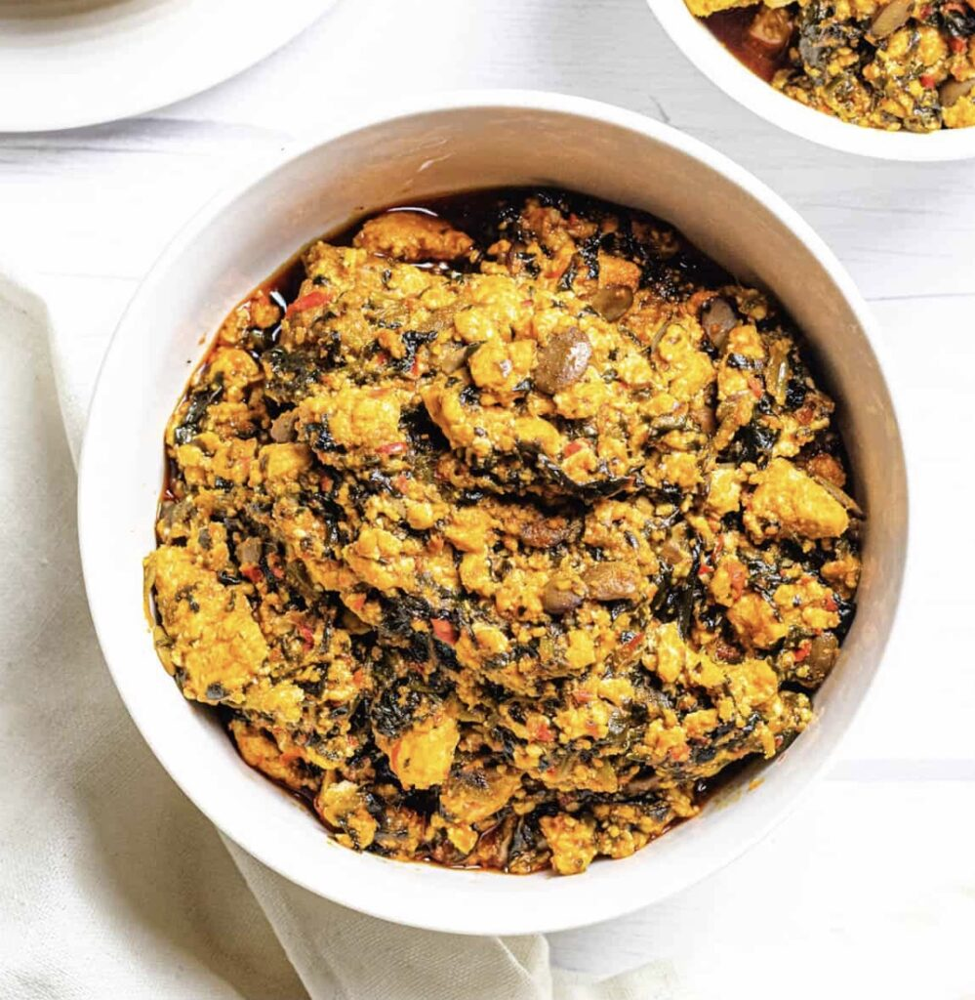

Egusi Soup Recipe and preparation process
Egusi is a Nigerian delicacy that is enjoyed mostly in the Easten part of Nigeria
We will learn how it is prepapred

Description of preparation Process
Egusi seed also known as melon seed
Palm oil
Ugu
meat
stockfish
crayfish
kpomo and anyother protein of choice
seasoning cube
salt to taste
pepper
uziza leave
Directions
Step One
Place on pot of water on the fire and add your washed beef and other proteins to the pot, saseon the water with salt, onions and your seasoning cube
Step two
In an empty bowl add your melon seed and a little water to make a thick paste and set aside
Step three
Once the protein is well cooked, add your palm oil, crayfish and pepper to the boiling pot and stir well
cover to cook for 2 mins
Step four
Nex add in your paste egusi using a spoon to add it in balls
Do not stire, cover the pot and leave to cook for 5mins, ensuring its not burning
Step Five
Now open the pot and stir gently and cover agin to cook more thoroughly for 5mins
Step Six
Next add in your uziza leaf, stire well and add in your ugu
Step Seven
After one min your Delicious Eguis soup is ready
Step Eight
Prepare some eba or pounded yam and serve hot